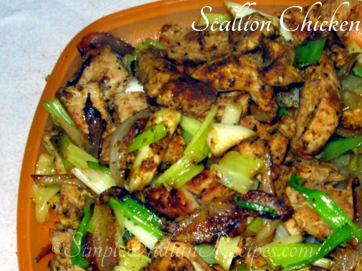

Recipe : Spring Chicken

I came across this recipe while Unicycling
with Sherpas around Everest, The locals believed
that chicken prepared this way seems to
have energizing powers. which is why its
called "Spring Chicken"
Ingredients You'll need
- 1 pound of your choice of Chicken
- 2 Jalepenos Sliced
- Gignger Paste
- 2 tbsp Lemon juice
- 5 sprigs of Green Onion
- Fresh Garlic
- Cilantro
How to make
- First youll need to cut your ingredients.
Start by slicing your chicken into strips no longer than 2 inches.
This ensures even cooking times for every peice.
Wash chicken then place in collinader and let drain.
- Next youll need to slice your veggies.
Start by slicing your green onions into small peices followed by the Jalepeno and then cilantro.
- Combine Garlic, Ginger Paste, Pepper, Salt and your
sliced veggies in a ziploc and add you tbsp of lemon juice.
- This part is essential
Proceed to crush all of your ingredients in the ziploc bag unitl youre
left with what resembles a paste.
- Add your chicken to the bag and let marinate in the fridge for at least 2 hours.
- Take chicken out of bag and lightly dust with corn starch.
- Pan fry in your choice of oil until meat is cooked through.
- Enjoy with a side of rice.